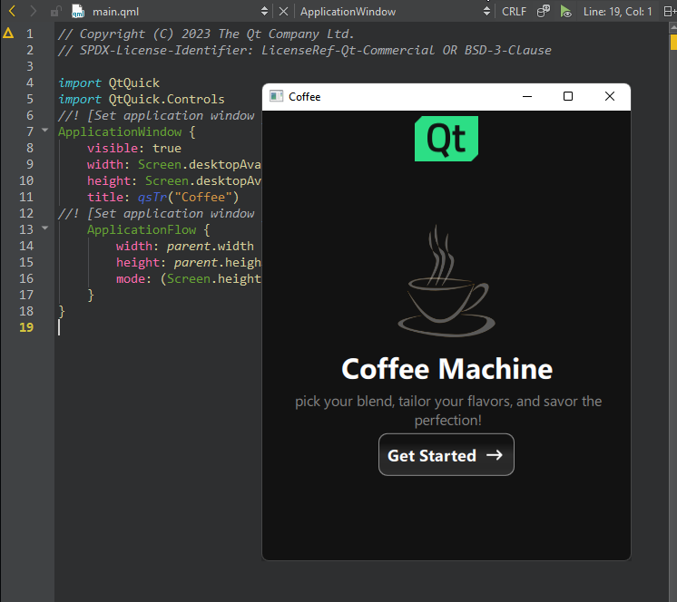

Preview a QML file on desktop
To preview the currently active QML file on the desktop:
- Select
 (Live Preview) on the editor toolbar.
(Live Preview) on the editor toolbar.
- Go to Build, and select QML Preview.
See also How To: Design UIs and UI Design.
To preview the currently active QML file on the desktop:
(Live Preview) on the editor toolbar.
See also How To: Design UIs and UI Design.